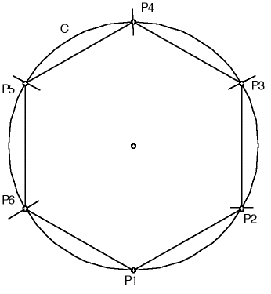
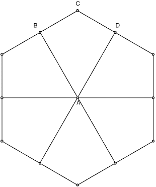

| Draw a circle C. |
| With center the point P1 at the bottom of the circle, with a comapss mark an arc on the circle at P2 using the same radius as the circle C. |
| Continue to mark arcs using the previous point as the center to obtain points P3, P4, P5, and P6. |
| Connect the arcs with segments to form the hexagon. |
| Now erase all the construction lines so only the hexagon remains. |
|  |
| Construction of the hexagon |
| Next draw the perpendicular bisectors of all the sides. |
|  |
| The perpendicular bisectors of all the sides. |
Return to Construction.